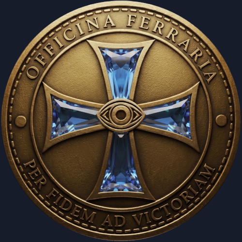

|
|
|
 |
|
"To save it, science and faith must work together."
My profound inspiration: The historic restoration of Christ's Tomb by National Geographic. This documentary perfectly reflects the core philosophy of OFFICINA-FERRARIA and the BLOX-TAK-LEX-AGENT system: combining the most advanced technology and scientific precision with deep faith, truth, and the Neo-Templar heritage.
Sanctum Sepulchrum - Terra Jerusalem
Terra Rossa BLOX-TAK-LEX-AGENT |
|
|
|
KATEDRA SPRAWIEDLIWOŚCI
Głębokie opracowanie historyczno-architektoniczne dawnego Królewskiego Gimnazjum w Bolesławcu (obecnie Sądu Rejonowego). Synteza losów budynku, pruskiej propagandy, antycznej filozofii (Homer, Sokrates) oraz dziejowej ironii losu Mikołaja Kopernika. Koncepcja, synteza historyczna i kierownictwo nad projektem: Łukasz Andruszkiewicz Opracowanie literackie: Google Gemini Deep Research. 2026-09-28 OTWÓRZ / POBIERZ OPRACOWANIE |
|
ZAPISY OTWARTE
#BLOX-#TAK-#C5ISR (INICJATYWA SPOŁECZNA #OLiOC / #DronLegion) 🔹 FAZA 1 (Do 25 listopada 2026 r.) – Cyfrowy Onboarding i Szkolenie: Darmowe testy ekosystemu realizowane w chmurze Google Cloud Platform (GCP) dzięki przyznanym środkom testowym Google. Etap obejmuje wdrożenie użytkowników przez szyfrowane tunele WireGuard VPN, automatyczny onboarding w aplikacji ATAK (wraz z komunikacją VoIP Mumble) oraz podstawowe przeszkolenie z obsługi smartfona (EUD) w infrastrukturze. Bezpieczeństwo sieci nadzoruje system analizy ruchu Malcolm (Suricata / Zeek / Arkime) oraz pakiet Smart Auditor. 🔹 FAZA 2 (Po 25 listopada 2026 r.) – Hardware, Logistyka i Rozwój Infrastruktury: Zaprezentowana dotychczas specyfikacja obudowy terenowego węzła EUD (Stal+M8, napęd YAW 180° bez TILT, korpus PMMA, membrany ePTFE Gore-Tex) ma charakter poglądowy. Po 25 listopada wspólnie ze społecznością wypracujemy i zatwierdzimy finalny projekt obudowy oraz sposób wdrożenia (np. wysyłka smartfonów przez Paczkomaty InPost w celu przygotowania obudów lub podział zadań w ramach społeczności). W zależności od skali zainteresowania po wyczerpaniu darmowego limitu GCP, dalsze utrzymanie sieci oprzemy o obszarowe mikroserwery (Raspberry Pi 5), dedykowany używany serwer centralny, a w przypadku uzyskania aprobaty służb państwowych – o rozbudowę infrastruktury na specjalistycznych jednostkach przemysłowo-wojskowych standardu OpenVPX (Rail-Mil Computers). 🔐 PROCEDURA REJESTRACJI I WERYFIKACJI (CHAIN OF TRUST): KROK 1: Pobierz poniższy dokument PDF (Regulamin i Deklaracja Uczestnictwa podpisany przez Organizatora). KROK 2: Podpisz pobrany dokument własnym Profilem Zaufanym (lub podpisem kwalifikowanym) na rządowym portalu podpis.gov.pl – stanowi to weryfikację autentyczności i polskiego obywatelstwa. KROK 3: Odeślij podpisany plik na adres e-mail: luke.strider.int@gmail.com oraz wypełnij Formularz Rejestracyjny. Po weryfikacji podpisu system automatycznie wygeneruje i prześle na podany adres e-mail indywidualny pakiet wdrożeniowy (IUCP/IPPU). P.S. Glosariusz terminów i pojęć - który w miarę możliwości jest na bieżąco aktualizowany dostępny jest pod linkiem: BLOX-TAK-ECOSYSTEM_GLOSSARY ZAPOWIEDŹ PROJEKTU (YOUTUBE POST) FINOPS: BIEŻĄCE KOSZTY INFRASTRUKTURY (LIVE) KROK 1: POBIERZ REGULAMIN (PDF) KROK 2: PODPISZ DOKUMENT (PODPIS.GOV.PL) KROK 3A: ODEŚLIJ PLIK (luke.strider.int@gmail.com) KROK 3B: WYPEŁNIJ FORMULARZ REJESTRACYJNY MON: DRON-LEGION DLA CYWILNYCH OPERATORÓW |
|
#SUPPORT - #IfYouCan
#WESPRZYJ - #JesliJestesWStanie ✌️♻️🌌🚀🌎🌍🌏🛰️🌌♻️✌️ WESPRZYJ PRZEZ PAYPAL (LukeBlueLOx) 👤 Beneficiary / Beneficjent: Łukasz Andruszkiewicz 🔢 Account / Nr konta: 76 2910 0035 9880 0000 0177 4953 🌐 IBAN: PL76 2910 0035 9880 0000 0177 4953 🏛️ BIC (SWIFT): BMPBPLP2XXX 🏦 Bank: Paysafe Prepaid Services Limited 🏷️ Title / Tytuł: Support / Wsparcie STRONA GŁÓWNA PAYSAFECARD ✌️♻️🌌🚀🌎🌍🌏🛰️🌌♻️✌️ |
|
SOCIAL LINKS
YouTube 𝕏 (Twitter) GitHub |